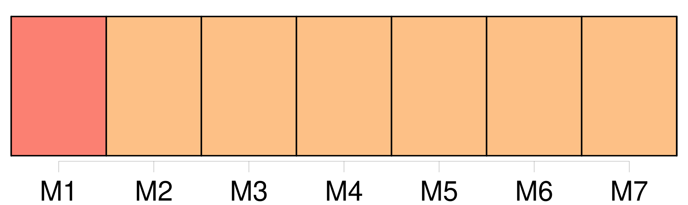

Longueur nb maillons : 45 mentions |
  |
On chercha toute la soirée parmi les veuves qu'on connaissait, et le choix s'arrêta sur [une femme de quarante ans, encore jolie, assez riche, de belle humeur et bien portante] , [qui] s'appelait Mme Berthe Vilers. On [l'] invita à passer un mois au château. [Elle] s'ennuyait. [Elle] vint. [Elle] était remuante et gaie ; M. de Coutelier [lui] plut tout de suite. [Elle] s'en amusait comme d'un jouet vivant et [passait] des heures entières à l'interroger sournoisement sur les sentiments des lapins et les machinations des renards. [1 phrases] L'attention qu' [elle] lui donnait le ravit ; et, un soir, pour [lui] témoigner son estime, il [la] pria de chasser, ce qu'il n'avait encore jamais fait pour aucune femme. L'invitation parut si drôle qu' [elle] accepta.
Ce fut une fête pour l'équiper ; tout le monde s'y mit, [lui] offrit quelque chose ; et [elle] apparut vêtue en manière d'amazone, avec des bottes, des culottes d'homme, une jupe courte, une jaquette de velours trop étroite pour la gorge, et une casquette de valet de chiens. [1 phrases]
Il [lui] expliqua minutieusement la direction du vent, les différents arrêts des chiens, la façon de tirer les gibiers ; puis il [la] poussa dans un champ, en [la] suivant pas à pas, avec la sollicitude d'une nourrice qui regarde son nourrisson marcher pour la première fois. [1 phrases] Le baron, derrière [son élève] , tremblait comme une feuille. [4 phrases]
[Mme Vilers, éperdue] , ferma les yeux, [lâcha] les deux coups, [recula] d'un pas sous la secousse du fusil : puis, quand [elle] reprit [son] sang-froid, [elle] aperçut le baron qui dansait comme un fou, et Médor rapportant deux perdrix dans sa gueule.
A dater de ce jour, M. de Coutelier fut amoureux d' [elle] Il disait en levant les yeux : « [Quelle femme] !! [1 phrases] Un jour, M. de Courville, qui le reconduisait et l'écoutait s'extasier sur [sa nouvelle amie] , lui demanda brusquement : « Pourquoi ne [l'] épousez -vous pas?? [2 phrases] [l'] épouser?? [8 phrases] Sacrebleu, [une femme comme ça] , on [la] dirait faite pour moi. [12 phrases] Les Courville, étonnés, inquiets, ne savaient que dire à [leur amie] [qu'] ils avaient prévenue de la démarche du baron. [1 phrases] Or, un soir, comme [Mme Vilers] chantait en s'accompagnant au piano, une bonne vint, avec un grand mystère, chercher M. de Courville, en lui disant tout bas qu'un monsieur le demandait. [16 phrases] . Je n'ai pas le droit, vous entendez, pas le droit, d'épouser [cette dame] J'attendrai qu' [elle] soit partie pour revenir chez vous ; il me serait trop douloureux de [la] revoir. [4 phrases]
Enfin l'affaire paraissait grave ; et pour ne point entrer en des complications difficiles, on prévint habilement [Mme Vilers] , [qui] s'en retourna veuve comme [elle] était venue. [1 phrases] Un soir, comme il avait fortement dîné et qu'il titubait un peu, M. de Coutelier, en fumant sa pipe le soir avec M. de Courville, lui dit : « Si vous saviez comme je pense souvent à [votre amie] , vous auriez pitié de moi. [8 phrases] Aussi, au moment de contracter des devoirs envers [cette dame] , un scrupule, un scrupule de conscience m'est venu. [17 phrases] Un honnête homme ne manque jamais à ses engagements ; et je prenais là un engagement sacré vis-à-vis de [cette personne] [24 phrases] Je vais écrire à [Berthe] de revenir, et bien vite. |
La ressource peut être téléchargée sur la page Ortolang
Si vous avez des questions ou vous voyez des erreurs, merci d'envoyer un mail à silvia.federzoni89@gmail.com
Site développé par S. Federzoni (contact)